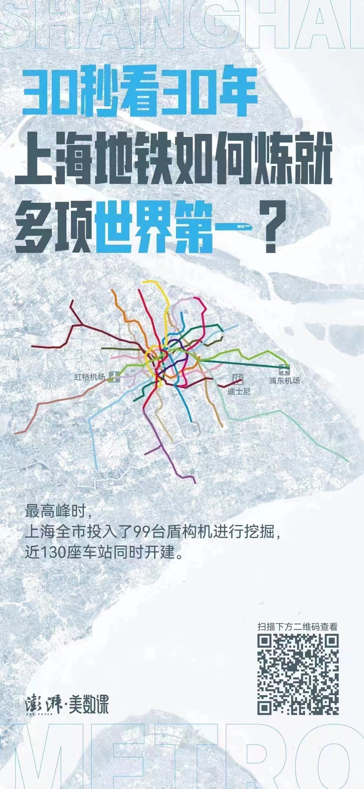
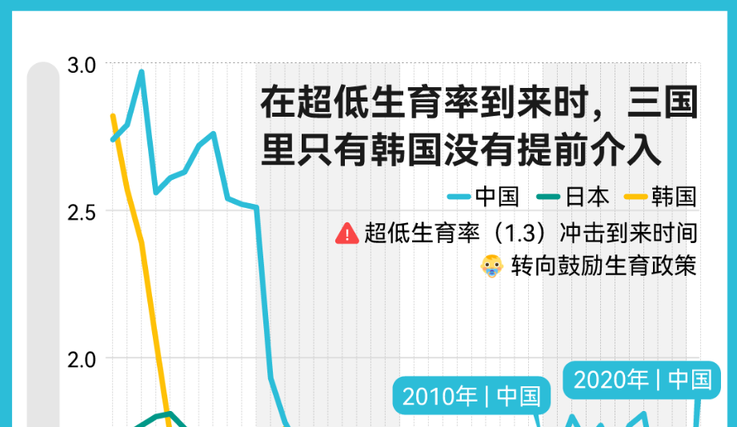
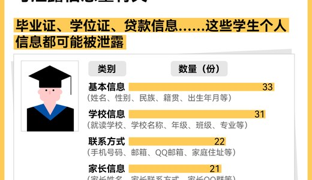
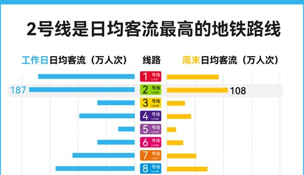
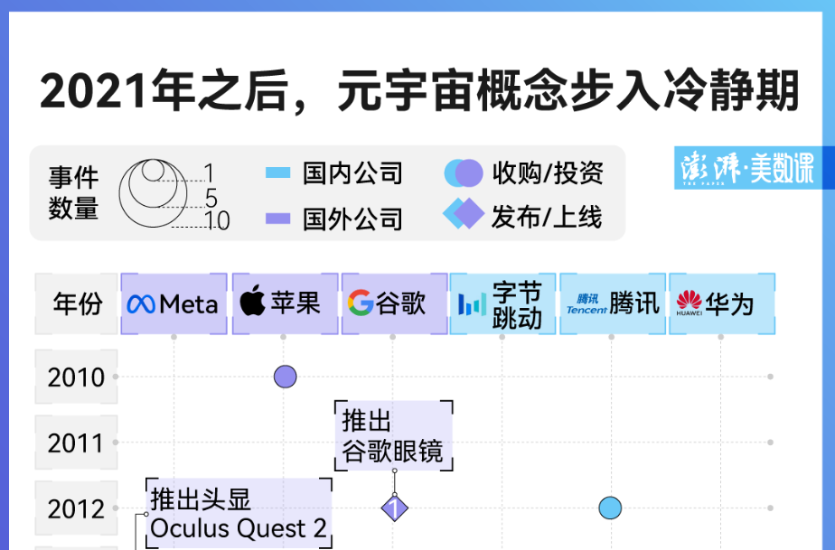
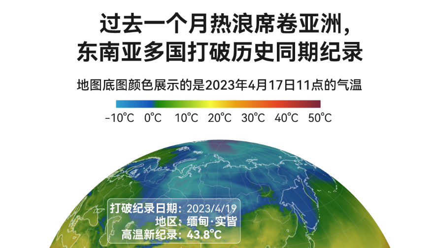
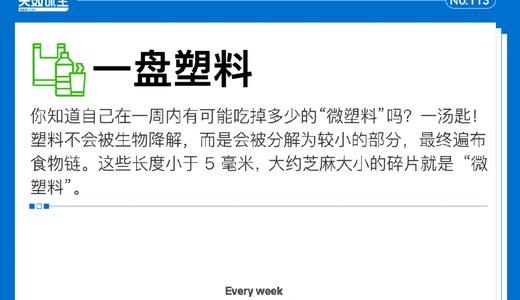

Data Journalism Internship at 澎湃美数课
During the internship, I created and contributed to data visual stories on social topics, environment, education, technology, and culture.
Published Stories


图解｜日韩学校的倒闭现象，值得我们警惕什么？Education and demographic change visual story.
学生信息泄露不只在人大，网上最低价也能买到数据Public-interest data story on privacy and information leakage.
30秒看30年，上海地铁如何炼就多项世界第一？Timeline and spatial story on the growth of Shanghai metro.
苹果头显来了，它会是下一个 iPhone 吗？Technology explainer and visual storytelling piece.
数读亚洲多国高温天气提前，2023会是史上最热的一年吗？Climate and heatwave data story.
污水冰棒、塑料大餐，这些可视化看得见还摸得着Environmental visual story with tangible data visualization. 联网、看论文、画可视化，ChatGPT 插件亲测真香Technology note on trying ChatGPT plugins.